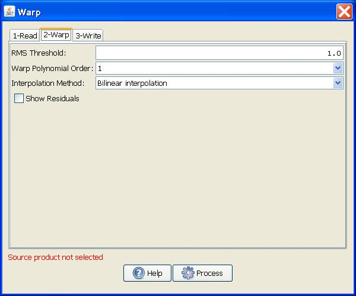

| Warp | |
WarpData metadata element how it was warped:
warpMethod (CPM, Polynomial or None), warpDegree (the polynomial order used,
0 for none), demRefined (1 when the DEM refinement was applied) and warpValid
(1 for a valid warp).
WarpData element of each band). Detailed
information contained in the residual file are listed below:rmsThreshold): values 0.001, 0.05, 0.1, 0.5, 1.0;
default 0.05. For complex data, 0.001, 0.05 and 0.1 are significance levels of the
w-test; 0.5 and 1.0, and any value for detected data, are RMS thresholds in pixels
(see above). For detected stacks with coarse-only GCPs use 0.5 to 1.0.

GPT operator: Warp. Generated from the operator source; parameter names are those used in GPT and graph XML.
| Parameter | Type | Default | Allowed values | Unit | Description |
|---|---|---|---|---|---|
rmsThreshold | float | 0.05 | 0.001, 0.05, 0.1, 0.5, 1.0 | Confidence level for outlier detection procedure, lower value accepts more outliers | |
warpPolynomialOrder | int | 2 | 1, 2, 3 | The order of WARP polynomial function | |
interpolationMethod | String | Cubic convolution (6 points) | Nearest-neighbor interpolation, Bilinear interpolation, Bicubic interpolation, Bicubic2 interpolation, Linear interpolation, Cubic convolution (4 points), Cubic convolution (6 points), Truncated sinc (6 points), Truncated sinc (8 points), Truncated sinc (16 points) | Interpolation Method | |
demRefinement | Boolean | false | Refine estimated offsets using a-priori DEM | ||
demName | String | Copernicus 30m Global DEM | The digital elevation model. | ||
excludeMaster | boolean | false | Exclude the reference (master) bands from the output; secondary band names are then written without the date suffix | ||
openResidualsFile | Boolean | false | Show the Residuals file in a text viewer |